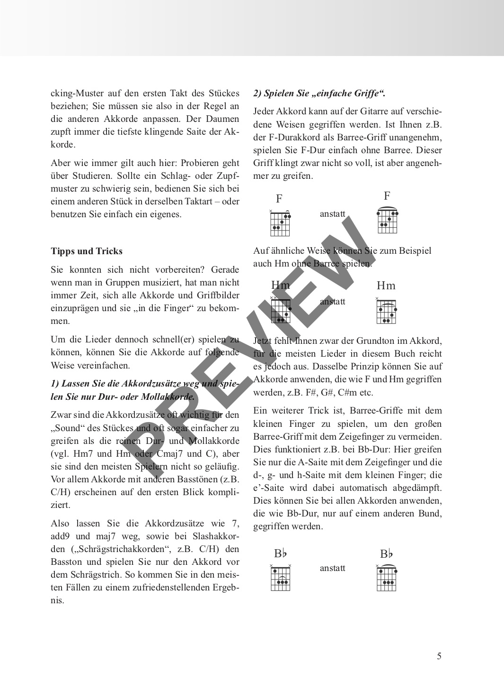
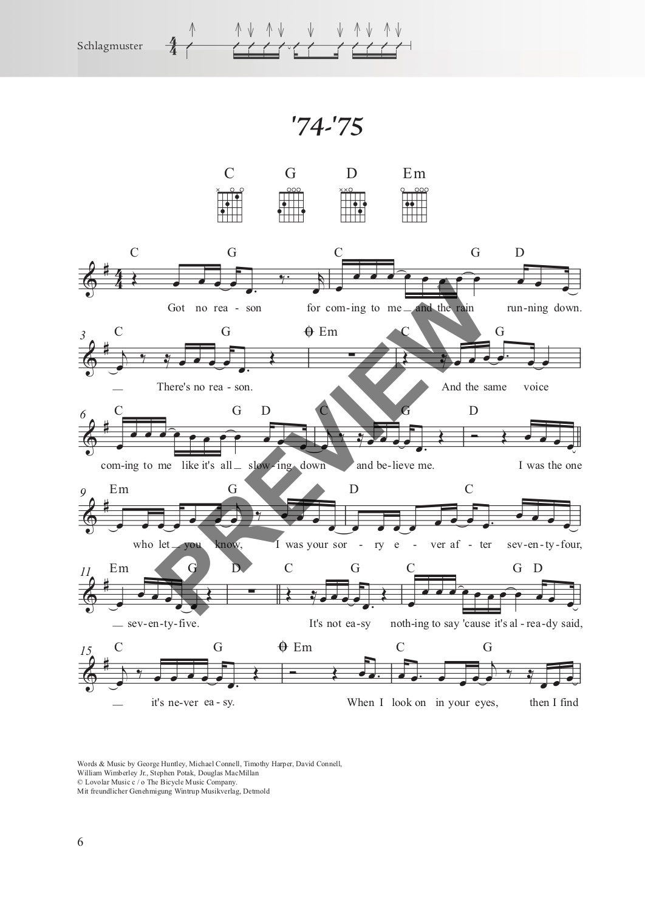
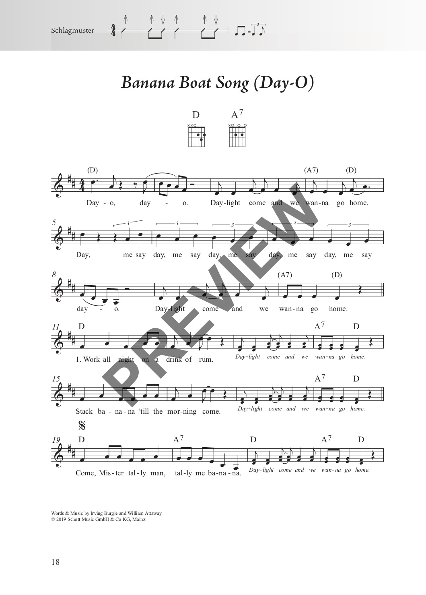
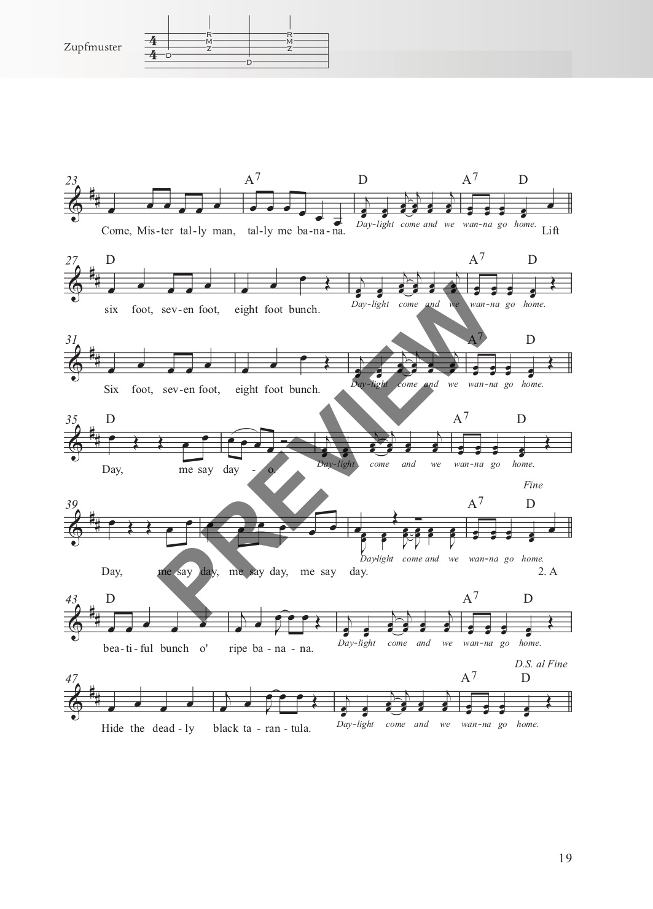
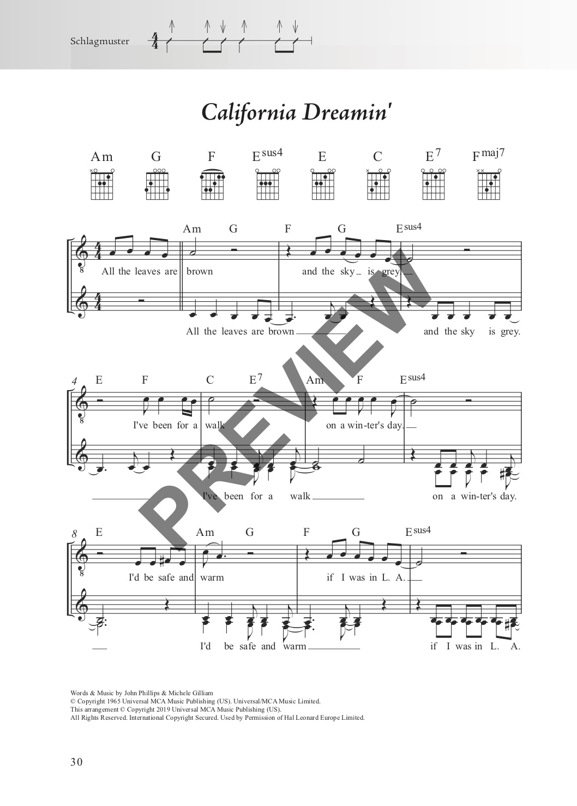
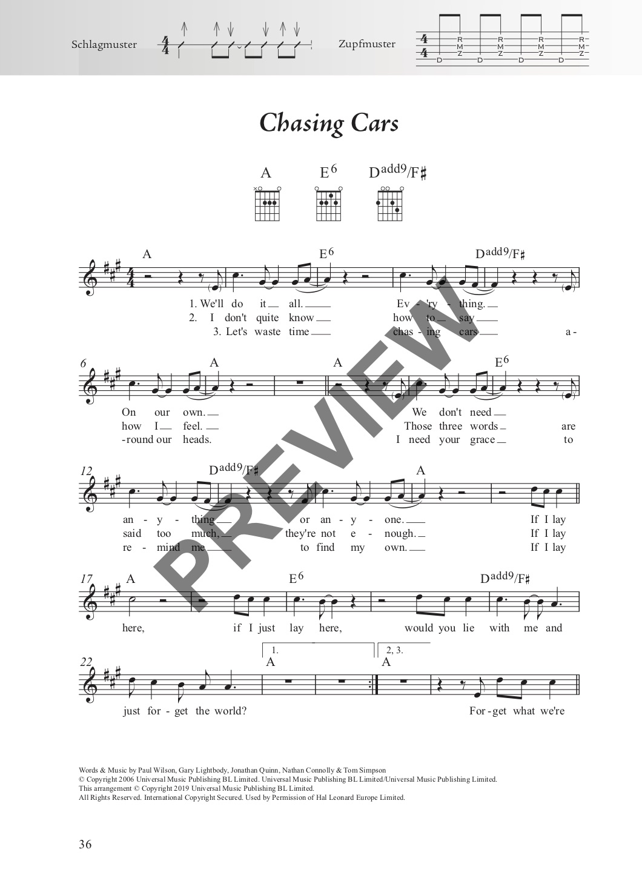

Das Rock & Pop Fetenbuch
für Alt und Jung
100 beliebte und bekannte Songs aus 60 Jahren Popgeschichte – von den Beatles bis Taylor Swift, leicht arrangiert für Gitarre oder Ukulele.
für Alt und Jung
100 beliebte und bekannte Songs aus 60 Jahren Popgeschichte – von den Beatles bis Taylor Swift, leicht arrangiert für Gitarre oder Ukulele.
| Ausgabe | Format | Seiten | Bindung | Preis |
|---|---|---|---|---|
| Gitarre | 18 × 25 cm | 224 | Stay-Open-Bindung | 19,50 € |
| Ukulele | 18 × 25 cm | 224 | Stay-Open-Bindung | vergriffen |
| XXL (Gitarre + Ukulele) | 23 × 31 cm | 226 | Spiralbindung | 29,50 € |
Das Rock & Pop Fetenbuch enthält 100 beliebte und bekannte Songs aus den letzten 60 Jahren Popgeschichte – alle speziell zum Mitsingen arrangiert und meist leicht zu begleiten mit der Gitarre oder Ukulele. Mit „Let It Be" und „Yesterday" von den Beatles über „Sound Of Silence" und „Nothing Else Matters" von Metallica bis hin zu „Tage wie diese" von den Toten Hosen oder „Perfect" von Ed Sheeran sind viele der größten Hits aller Zeiten dabei.
Die überarbeitete Neuauflage enthält nun auch Ukulele-Griffbilder. Allen Songs vorangestellt sind die benötigten Akkordgriffe sowie Schlag- und Zupfmuster für die Begleitung. Dank der Zupfmuster wird auch der Einstieg in die Welt des Folkpickings spielend leicht.
Die XXL-Version mit Spiralbindung steht perfekt auf dem Notenständer. Die Stücke sind fast immer auf maximal zwei Seiten notiert – beim Spielen muss also nicht umgeblättert werden. Noten und Texte sind groß genug, um sie auch mit bis zu einem Meter Abstand gut lesen zu können – ideal für Personen mit Sehschwäche und für das gemeinsame Singen in der Gruppe.
Noch mehr Rocksongs? Alle weiteren Songs gibt es im Rock & Pop Fetenbuch 2.
Alle 100 Songs zum Anhören:
100 Lieder in alphabetischer Reihenfolge:
Einen Eindruck vom Inhalt und der Gestaltung:





